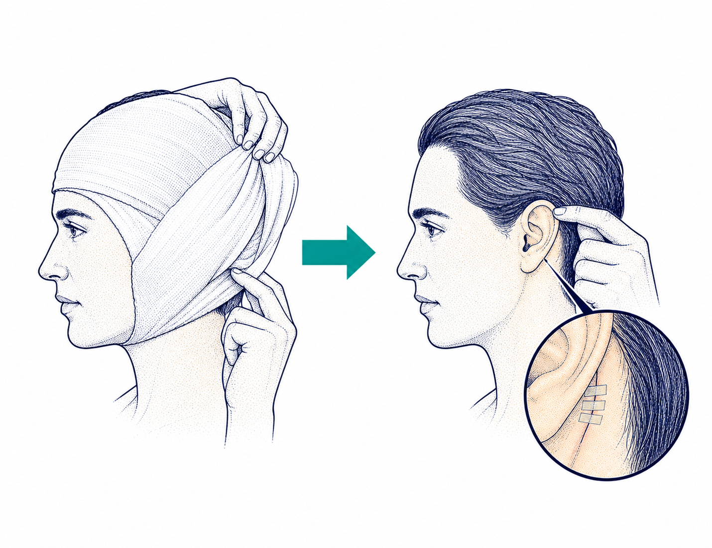

Post-op recovery guide
Three things to know after surgery
Draft · pending clinical review
Day 2
Remove the head dressing

- 1
Remove the mastoid dressing, or head bandage.
- 2
Check whether tape covers the incision behind the ear.
During recovery
Watch for all three signs
Call your surgeon or clinic staff only if all three signs below are present.
- 1Red and swollen
- 2Not getting betterOver the next 1-2 days
- 3Hurts when touched
All 3 call
After healing
Return for programming

An audiologist programs the speech processor you wear outside your ear.
The program is made for your needs.